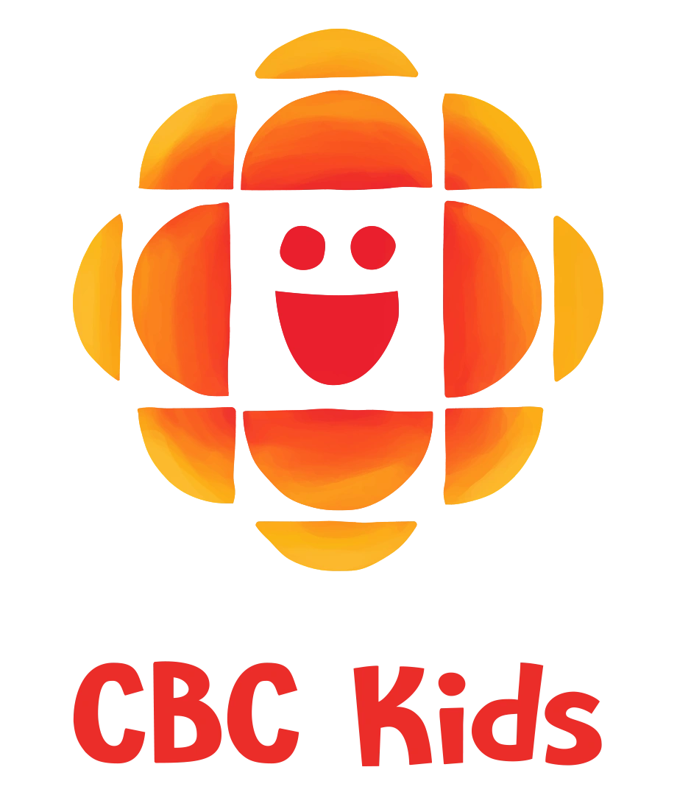
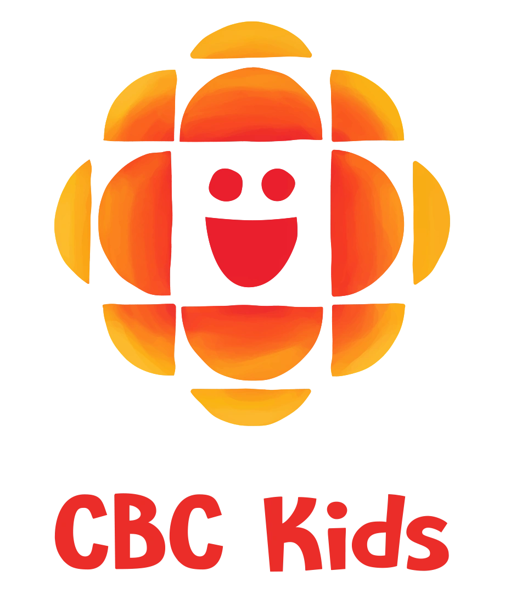

I have a love for digital environments and am passionate about creating things that people care about. Through my career I’ve been lucky to launch products with some of the largest entertainment brands in the world.
If you can stick with me for a few pages, I’d love to tell you about myself and the work I do.
Some of the very cool folks I've worked with:


 

Over the years, I’ve worked on everything from TVE apps to games to e-commerce platforms, always focusing on designs that feel both intuitive and visually interesting. To me, good design is about fostering genuine connections, making life easier for users, and working hand-in-hand with others to get there.
Or more specifically:
Bleacher Report Multi-Platform Redesign Senior UX • 2022-2025
Dotopedia™ Senior UX • 2022-2025
Dotopedia™ Senior UX • 2022-2025
Over the years, I’ve worked on everything from TVE apps to games to e-commerce platforms, always focusing on designs that feel both intuitive and visually interesting. To me, good design is about fostering genuine connections, making life easier for users, and working hand-in-hand with others to get there.
Or more specifically: